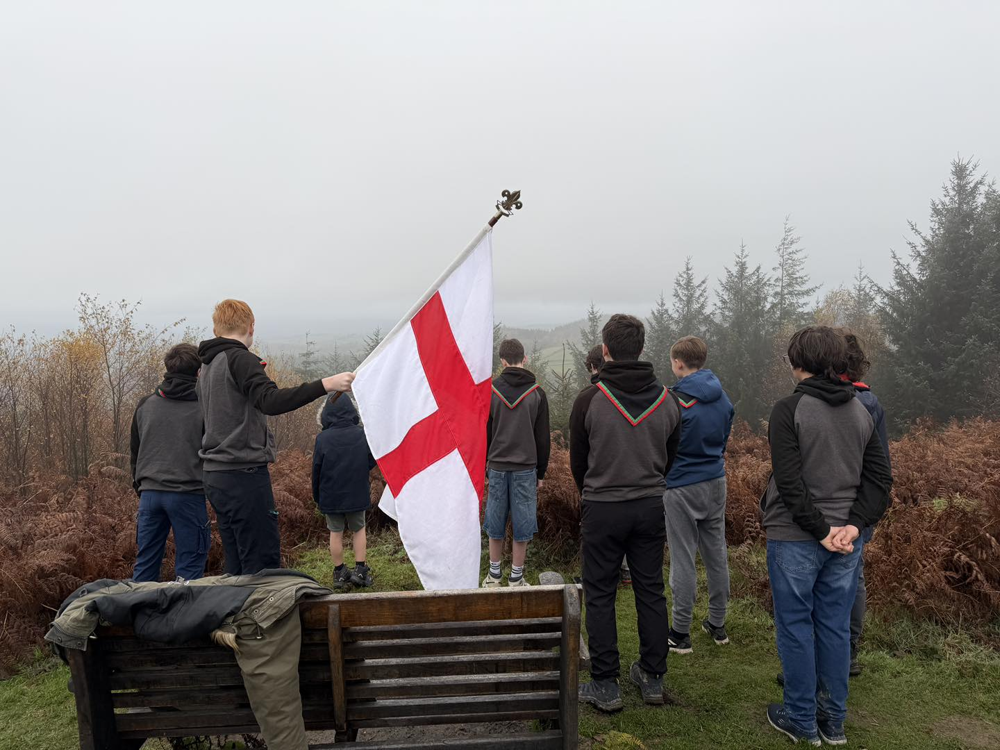

Explorer Scouts in Ludlow — Adventure, Teamwork & Memories That Last
Triffid Explorer Scouts is for 14–18 year olds who love getting outdoors — camping, hiking, kayaking, and giving back to the community.

Triffid Explorer Scouts is for 14–18 year olds who love getting outdoors — camping, hiking, kayaking, and giving back to the community.
not everything here is what it seems — scroll down to find out why we're different
From wild camping to white-water kayaking, there's never a dull Monday at Triffid Explorers.

Explore the stunning Shropshire countryside on proper adventures — bike rides, hikes, and multi-day expeditions.

Wild camping, fire-lighting, and outdoor cooking. Learn real survival skills around the campfire.

Get on the water with kayaking, canoeing, and other water-based adventures throughout the year.

Make a difference in Ludlow and beyond, for real. Remembrance parades, volunteering, and community projects that matter.

Outdoor games in the woods, night hikes, gaming nights on the projector, cooking challenges — plus we're a licensed DofE centre for Bronze, Silver, and Gold.

Go-karting, rock climbing, paintballing, the Monopoly Run in London — we pack in the big activities alongside the regular programme. Our Explorers pick what they want to do each term.
We're a friendly Explorer Scout Unit based in Ludlow, Shropshire, for young people aged 14 to 18. Led by Sam and James — who between them have nearly 60 years of Scouting experience — we believe in proper outdoor adventure. The kind where you carry your own pack, cook your own food, and earn every mile.
Whether you've been in Scouts since Beavers or you're completely new to it, you'll find a welcoming group ready to try new things, push boundaries, and have a brilliant time doing it.
We meet every Monday from 7pm to 9pm at the Ludlow Scout Hut. We're based in Ludlow but welcome young people from across South Shropshire and the borders — including from Craven Arms, Bucknell, Cleobury Mortimer, Knighton, Bishop's Castle, and North Herefordshire. Not sure if we're your nearest group? Find your local Scout group here — and if Triffid is the one for you, drop us an email or come along to a session.

found it? nice. now check what's coming up
See what's coming up. Our live calendar is kept up to date with all meetings, trips, and events.
Loading programme...
almost there. the last clue is hiding at the very bottom of the page
See what our Explorers have been achieving recently.
Loading latest news...
Whether you're 13½ or 17, there's a place for you at Triffid Explorers. Come along to a Monday session or drop us an email — no commitment, just come and see what we're about.
Your young person is in experienced, committed hands.
Explorer Scout Leader
In Scouting for over 29 years, starting as a Beaver in 1997. DBS-checked and trained. Received a commendation for keeping young people safe and calm during a serious climbing incident on camp — one that brought in mountain rescue, fire brigade, and air ambulance — alongside dedicated service to Scouting. Reigning Monopoly Run Leaders' League champion (2025).
Explorer Scout Leader
Over 30 years in Scouting since joining as a Beaver in 1996. Holds a paddlesport leadership permit for kayaking and water activities. Received a commendation alongside Sam for protecting young people during the same serious climbing incident, when emergency services including mountain rescue, fire brigade, and air ambulance attended the scene. Also a Monopoly Run Leaders' League champion (and very competitive about defending it).
Everything you need to know about your young person joining Triffid Explorers.
Explorer Scouts is the section of the Scout Association for young people aged 14 to 18 (they can join from 13½). It's all about adventure, developing skills, and building confidence through real experiences. We typically run six or seven big activities each term on top of our regular Monday sessions. Looking for activities for teenagers in Ludlow? This is it.
The safety of young people is our top priority. All leaders are DBS-checked, trained in safeguarding, and follow The Scout Association's safeguarding policies. We maintain appropriate adult-to-young-person ratios for all activities and have clear procedures for reporting concerns.
Not sure if we're your nearest group? Find your local Scout group on the Scouts website. We'd always encourage you to try your nearest group first, but if Triffid Explorers is the right fit, we'd love to have you.
Hear from our Explorers and their parents.
“He went on his free trial grumbling and expecting to come back saying it was rubbish. Six months later he's properly into it and pushing me to drive him to camps. Sam and James clearly know what they're doing, and the kids do most of the deciding, which is why he's stuck with it.”
— Parent of a Year 10 Explorer
“Got something to say about Triffid Explorers? Send us a few words and we'll feature it here.”
— We'd love to hear from you
This bit's for our existing members — help us grow the unit.
You know what we're like better than any leader does. If you've got a mate at school, in another year group, or just floating around with nothing to do on a Monday — send them this page.
It's written for friends of Explorers who aren't in Scouting. The honest pitch, no sales chat, no parents-y language. Three free Mondays, then they decide.
Easier than trying to explain it yourself.
The link: triffidesu.co.uk/bring-a-mate
Standard edition:
Brainrot edition (if your mate's terminally online):
Brainrot edition activates the brainrot mode site-wide for your mate. They can switch it off by typing “triffid” on a keyboard.

Latest Adventures
Fresh from our social media — follow us on Instagram and Facebook for more!
Loading our latest posts…
Our feed is having a rest — pop over to Instagram to see what we've been up to.
View our Instagram